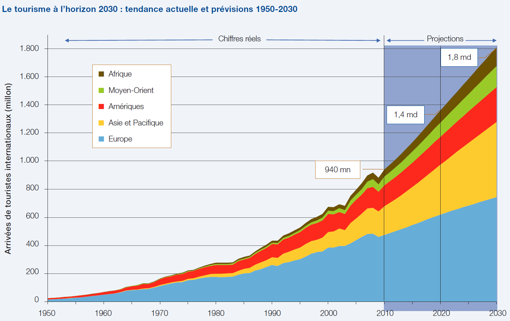
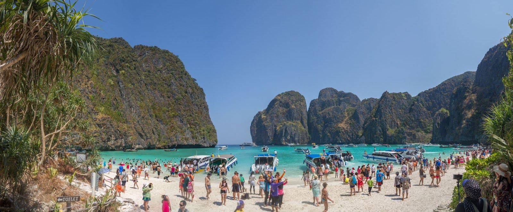
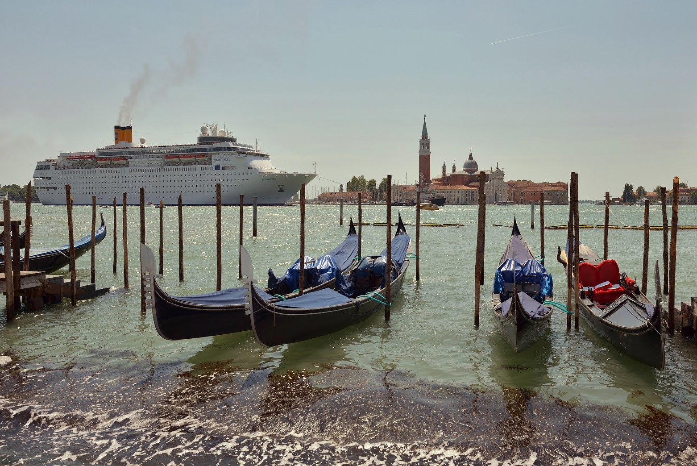
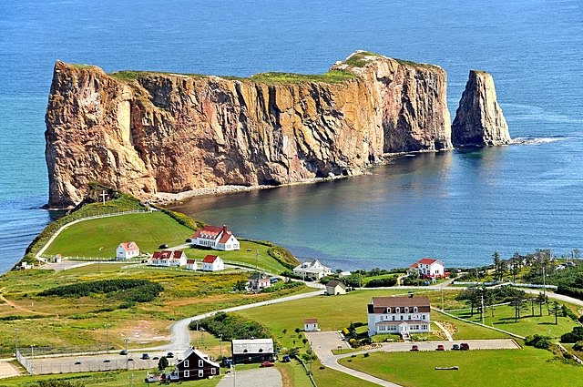
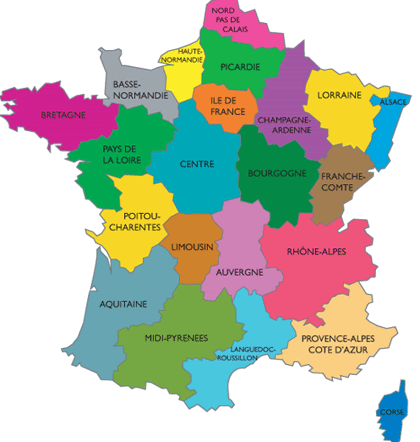
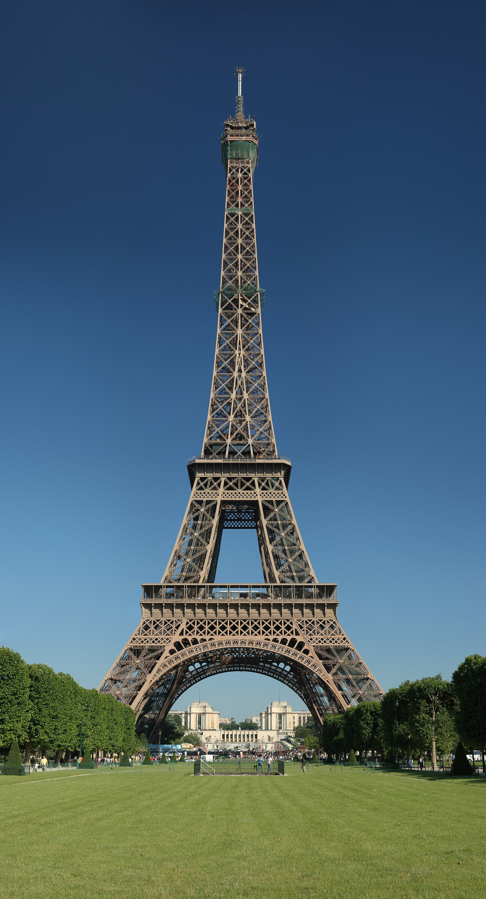
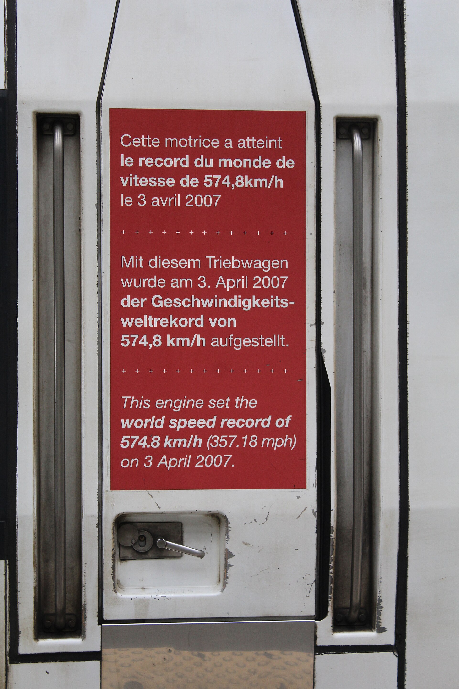

Géographie et éducation à la citoyenneté
04 / 11 territoires
Le territoire touristique
Territoire région · Régional · Le développement du tourisme et ses effets
- acculturation
- aménagement
- commercialisation
- flux touristique
- foyer touristique
- mondialisation
- multinationale
- ressource
- tourisme
- La Gaspésie (obligatoire)
- L'Île-de-France
Mise en contexte
Un territoire touristique s'organise autour d'un attrait majeur. Une région décide de mettre en valeur ce qu'elle possède déjà, un paysage, un monument, un savoir-faire, et elle aménage son territoire pour accueillir les visiteurs que cet attrait fait venir. Ce choix transforme la région : il crée des emplois, il change les villages, il met parfois de la pression sur des milieux fragiles. Deux enjeux s'y manifestent : organiser un territoire en fonction du tourisme, et composer avec les effets du tourisme de masse sur la population qui habite là toute l'année.
Le programme demande d'étudier deux territoires touristiques, dont une région du Québec ou du Canada. Sur cette page, il sera question de la Gaspésie et de l'Île-de-France. Deux régions que presque tout oppose, sauf l'essentiel : elles vivent toutes les deux du regard que les autres portent sur elles.
Concepts à l'étude
- Acculturation : la transformation d'une culture au contact prolongé d'une autre culture. Dans une région touristique, elle joue dans les deux sens : les visiteurs rapportent des habitudes de chez eux, et la population locale adapte sa cuisine, sa langue ou ses fêtes à ce que les visiteurs attendent.
- Aménagement : l'ensemble des interventions par lesquelles on organise un territoire. Ici, ce sont les routes, les hôtels, les stationnements, les sentiers, les belvédères et les centres d'accueil.
- Commercialisation : le fait de transformer quelque chose en produit que l'on vend. Un paysage, une tradition ou un monument deviennent un produit touristique dès qu'on les met en marché.
- Flux touristique : le déplacement des touristes d'une région vers une autre. On mesure un flux par son volume, sa direction et le moment de l'année où il se produit.
- Foyer touristique : une région d'où partent les touristes ou une région qui les reçoit. On parle alors de foyer émetteur et de foyer récepteur.
- Mondialisation : le phénomène par lequel les sociétés du monde deviennent de plus en plus liées les unes aux autres, ce qui accélère la circulation des idées, des biens et des personnes.
- Multinationale : une entreprise qui exerce ses activités dans plusieurs pays. Dans le tourisme, ce sont les chaînes d'hôtels, les compagnies aériennes, les voyagistes et les plateformes de réservation.
- Ressource : ce qu'un territoire possède et que l'on peut mettre en valeur. Une ressource touristique n'est pas forcément matérielle : un paysage, un climat ou une histoire en sont.
- Tourisme : l'ensemble des déplacements et des activités des personnes qui séjournent dans un endroit où elles ne vivent pas habituellement.
Qu'est-ce qu'un territoire touristique
Le tourisme suppose un déplacement. Quelqu'un quitte l'endroit où il vit, séjourne ailleurs, puis revient. Ce mouvement relie deux régions : celle d'où il part, le foyer émetteur, et celle qui l'accueille, le foyer récepteur. Le déplacement lui-même porte un nom, le flux touristique.
Le territoire touristique est la région organisée autour d'attraits remarquables. Son aménagement est conçu pour répondre aux besoins des visiteurs, et le tourisme y devient souvent l'une des activités économiques principales. C'est cette dernière condition qui distingue un territoire touristique d'une région simplement jolie : il ne suffit pas d'attirer des visiteurs, il faut avoir organisé le territoire pour eux. Un même territoire peut jouer les deux rôles. La France reçoit plus de touristes que tout autre pays au monde, et les Français comptent en même temps parmi ceux qui voyagent le plus à l'étranger.
Les formes de tourisme
Huit façons de faire du tourisme
Un attrait, un aménagement
- Le tourisme balnéaire La plage, la mer et le soleil. C'est la forme la plus répandue dans le monde, et celle qui demande le plus d'hébergement sur un même littoral.
- Le tourisme culturel Le patrimoine d'une région et, par extension, le mode de vie de ses habitants. C'est la forme dominante en Île-de-France.
- Le tourisme d'aventure Des activités qui comportent une part de risque et de nouveauté : escalade, kayak de mer, expédition en territoire éloigné.
- Le tourisme de divertissement Voyager pour s'amuser. Les parcs d'attractions sont eux-mêmes des aménagements géants, bâtis pour des millions de personnes par année.
- L'écotourisme La découverte de la nature, dans le respect du milieu et de la culture locale. Il suppose une limite volontaire du nombre de visiteurs.
- Le tourisme sportif Voyager pour pratiquer un sport ou pour assister à un événement d'envergure, comme un match du Canadien quand on vient de l'extérieur.
- Le tourisme de mémoire Les lieux d'événements historiques marquants, souvent tragiques : la crête de Vimy, les plages de Normandie, Auschwitz-Birkenau.
- L'agrotourisme Les savoir-faire agricoles d'un territoire, ses paysages et ses spécialités : fromageries, vignobles, cabanes à sucre et fermes ouvertes.
On ne voyage pas tous pour les mêmes raisons. Chaque forme de tourisme repose sur un attrait différent, donc sur des aménagements différents, et une même région en combine souvent plusieurs. La Gaspésie mêle écotourisme, tourisme d'aventure et agrotourisme. L'Île-de-France combine tourisme culturel, tourisme de divertissement et tourisme de mémoire.
L'histoire du tourisme
Le tourisme a d'abord été une pratique réservée aux plus riches avant de devenir un phénomène de masse. Trois moments expliquent ce passage.
Le Grand Tour au 18e siècle
Le Grand Tour désignait un voyage d'environ un an à travers l'Europe, qu'accomplissaient de jeunes aristocrates britanniques. L'étape italienne et l'étude de l'art classique en formaient le coeur. Ces jeunes voyageaient pour découvrir l'Europe, mais aussi pour nouer des relations utiles à leur carrière. Le voyage était alors un privilège de fortune, pas un loisir.
Thomas Cook et la première agence de voyages
Le tourisme tel que tu le connais apparaît au milieu du 19e siècle. Dans les années 1840, Thomas Cook organise des voyages de groupe en Grande-Bretagne. Son activité prend son essor grâce à l'Exposition universelle de Londres de 1851, le premier événement à provoquer d'importants déplacements de population. Il organise un premier circuit européen en 1855, lance les coupons d'hôtel en 1868, une croisière sur le Nil l'année suivante, puis le chèque de voyage en 1874. Le voyage devient un service que l'on achète.
L'apparition du tourisme de masse
Le tourisme de masse naît de la généralisation des congés payés dans les pays industrialisés et de la hausse du pouvoir d'achat. À partir des années 1960, des familles qui n'auraient jamais voyagé partent en vacances. L'avion, puis les vols à bas prix, achèvent d'ouvrir la planète.
Le tourisme dans le monde

Source
Organisation mondiale du tourisme, Faits saillants OMT du tourisme, edition 2017, repris dans le dossier du RECIT, Service national du RECIT, univers social. Licence : Creative Commons BY-NC-SA.Le tourisme international a changé d'échelle en une génération. On comptait 435 millions de touristes internationaux en 1990. En 2024, l'activité retrouvait son niveau d'avant la pandémie avec environ 1,46 milliard de voyageurs, et 2025 a établi un nouveau record avec 1,52 milliard, soit une hausse de 4 % en un an.
Source : ONU Tourisme, Baromètre du tourisme mondial, janvier 2026
Les flux touristiques mondiaux : d'où partent et où vont les touristes
Choisis une année, puis touche une région
Arrivées de touristes internationaux et départs selon la région d'origine : ONU Tourisme, International Tourism Highlights, édition 2025 (annexe statistique) et Baromètre du tourisme mondial, janvier 2026, pour 2025 (chiffres provisoires). Dix pays les plus visités : ONU Tourisme, International Tourism Highlights, édition 2025. Régions selon le classement d'ONU Tourisme (la Türkiye, Israël, la Russie et l'Asie centrale sont comptés en Europe; l'Égypte et la Libye, au Moyen-Orient). Fond de carte : Natural Earth (domaine public), projection Equal Earth.
D'où viennent les touristes
Le tourisme mondial reste largement dominé par les pays riches. En Europe, l'Allemagne, le Royaume-Uni, la France et l'Italie comptent parmi les principaux foyers émetteurs. De l'autre côté de l'Atlantique, les États-Unis constituent le premier marché émetteur au monde par le montant des dépenses. L'Australie et le Canada complètent ce groupe des nations traditionnellement voyageuses.
Cette carte se redessine. La Chine a connu une hausse fulgurante de ses dépenses touristiques à l'étranger. L'Inde suit le même chemin, portée par une classe moyenne de plus en plus mobile. Les pays du Golfe, notamment les Émirats arabes unis et l'Arabie saoudite, s'affirment comme des émetteurs à fort pouvoir d'achat. Voyager demeure pourtant hors de portée pour la majorité de l'humanité.
Où vont les touristes
La France domine ce classement depuis plus de trente ans, et l'écart avec le dixième rang est considérable : elle reçoit près de trois fois plus de touristes que le Japon. Les grands foyers récepteurs se concentrent donc sur un très petit nombre de territoires.
Source : ONU Tourisme, données de 2024
Quand le succès devient un problème
Certains sites reçoivent plus de visiteurs qu'ils ne peuvent en supporter. En Thaïlande, la baie de Maya, rendue célèbre par un film, accueillait environ 5 000 personnes par jour avant sa fermeture en 2018. La plupart n'y restaient que quelques dizaines de minutes. La plage a subi une érosion sévère et une grande partie des récifs coralliens ont été endommagés par la pollution des moteurs. La fermeture a été prolongée parce que les dégâts se sont révélés pires que prévu.
Source : Agence France-Presse, reprise par Radio-Canada, 2018
À Venise, les défenseurs de l'environnement et du patrimoine accusaient les vagues des très grands navires d'éroder les fondations de la ville et de menacer l'écosystème de la lagune. Depuis le 1er août 2021, les navires de plus de 25 000 tonnes ou de plus de 180 mètres de long ne peuvent plus emprunter les principaux axes de navigation de la ville.
Source : Radio-Canada, 2021

Source
Maksym Kozlenko, Vue panoramique de la baie de Maya (2016), reprise dans le dossier du RECIT, Service national du RECIT, univers social. Licence : Creative Commons BY-SA.
Source
Wolfgang Moroder, Paquebot passant devant le bassin de Saint-Marc (2015), repris dans le dossier du RECIT, Service national du RECIT, univers social. Licence : Creative Commons BY-SA.La Gaspésie
Le tour de la Gaspésie : attraits, aménagements, saisons
Choisis une saison, puis un attrait
Périodes d'ouverture : Tourisme Gaspésie (fiches des attraits, offre hivernale 2025-2026, trucs et astuces), Site d'interprétation Micmac de Gespeg, consultés en novembre 2026; les dates changent d'une année à l'autre. Longueur de la boucle : Tourisme Gaspésie et Transports Québec. Côtes, route 132, parcs et réserves : © les contributeurs d'OpenStreetMap, licence ODbL, simplifiés. Limite provinciale : Natural Earth.
La carte suit la route 132 autour de la péninsule. Choisis une saison : les attraits fermés pâlissent. Garde-la en tête pour la dernière question de cette section, celle sur la durée de la saison touristique.
La Gaspésie est une péninsule de 30 341 kilomètres carrés, bordée par le fleuve Saint-Laurent au nord, le golfe du Saint-Laurent à l'est et la baie des Chaleurs au sud. La chaîne des Appalaches la traverse. Ses principales villes sont Matane, Sainte-Anne-des-Monts, Gaspé, Percé, Chandler, Bonaventure et Carleton, presque toutes situées sur le pourtour côtier. Trois parcs nationaux y protègent des milieux remarquables : le parc national de la Gaspésie, le parc national Forillon et le parc national de l'Île-Bonaventure-et-du-Rocher-Percé.
La région a longtemps été une région ressource, c'est-à-dire une région dont l'économie reposait sur l'exploitation de ses richesses naturelles : la pêche, la forêt et les mines. La chute des quotas de pêche et la fermeture des mines, à Murdochville notamment, ont forcé la population à chercher une autre voie. Le tourisme est devenu cette voie.
Les attraits touristiques

Source
Dennis Jarvis, Rocher Perce (2010), repris dans le dossier du RECIT, Service national du RECIT, univers social. Licence : Creative Commons BY-SA.Le rocher Percé
Le rocher Percé est un monolithe de calcaire situé à environ 750 kilomètres à l'est de Québec, près de la ville qui porte son nom. Il mesure 450 mètres de long, 90 mètres de large et 85 mètres de haut. À marée basse, un cordon de galets le relie à la rive, mais il est maintenant interdit de s'y rendre : des tonnes de roches s'en détachent chaque année, en toute saison. Il doit son nom aux arches que la mer a creusées dans la roche : il en aurait compté plusieurs, mais une seule subsiste, large d'une trentaine de mètres. Une autre s'est effondrée sous l'effet de l'érosion en 1845, laissant un pilier détaché que l'on appelle l'Obélisque.
Sources : L'Encyclopédie canadienne; Sépaq, parc national de l'Île-Bonaventure-et-du-Rocher-Percé
L'île Bonaventure
À quelques centaines de mètres du rocher, l'île Bonaventure abrite l'une des plus grandes colonies de fous de Bassan au monde. Environ 116 000 oiseaux y reviennent chaque été pour la reproduction. L'accès à l'île est contrôlé et le nombre de visiteurs limité, précisément pour protéger la colonie.
Les monts Chic-Chocs
Les Chic-Chocs forment la partie la plus élevée des Appalaches québécoises. La réserve faunique se distingue par ses sommets dénudés, dont les monts Blanche-Lamontagne et Vallières-de-Saint-Réal, qui culminent tous deux à environ 940 mètres. On y pratique la randonnée, la pêche et la chasse. L'orignal et le caribou y vivent, cette dernière population étant en situation précaire.
Le phare de La Martre
Le premier phare de La Martre a été construit en 1876 par le gouvernement fédéral, pour sécuriser une navigation en croissance entre les phares de Madeleine et de Cap-Chat. C'était une tour montée à même le toit de la maison du gardien. Le phare actuel, octogonal, en bois, aux côtés inclinés, date de 1906. Il a conservé son mécanisme d'horlogerie d'origine, à câble et à poids, qui fait tourner le module d'éclairage.
Le site d'interprétation Micmac de Gespeg
Le site présente une reproduction d'un campement et une exposition permanente consacrées au mode de vie des Micmacs au fil des quatre saisons. La visite guidée porte sur leurs traditions et sur leur connaissance du milieu naturel. C'est un exemple de tourisme culturel porté par la communauté elle-même.
La baie des Chaleurs
La baie des Chaleurs bénéficie d'une situation qui permet à l'eau d'atteindre une température moyenne d'environ 22 degrés Celsius l'été, une rareté sous ces latitudes. Elle fait partie du Club des plus belles baies du monde depuis 2004. Des municipalités de la baie ont mis sur pied un circuit des plages pour aider les visiteurs à organiser leur séjour.
Les aménagements touristiques
Tout, en Gaspésie, dépend d'abord d'une route. La route 132 est la plus longue du Québec avec plus de 1 600 kilomètres au total, et c'est sa boucle gaspésienne, longue d'environ 885 kilomètres, qui fait le tour complet de la péninsule en longeant la côte. S'y ajoutent l'aéroport de Gaspé, qui offre des liaisons avec Montréal, le service ferroviaire ainsi que les traversiers, dont celui qui relie Matane à la Côte-Nord.
Source : Transports Québec pour la longueur totale de la route
Ce réseau est soutenu par un vaste ensemble d'hébergements répartis le long du littoral : hôtels, auberges, gîtes, campings et terrains pour véhicules récréatifs. Les parcs nationaux occupent une place centrale parmi les aménagements, puisqu'ils protègent les milieux tout en organisant l'accueil.
À côté des grandes aires protégées, une multitude de sites patrimoniaux et culturels racontent l'histoire de la région. Sentiers d'interprétation, panneaux et centres d'accueil y expliquent le lien entre les Gaspésiens et leur environnement. L'offre de plein air repose enfin sur des aménagements plus discrets mais essentiels : quais d'embarquement pour les croisières aux baleines à Percé et à Rivière-au-Renard, pistes cyclables de la Route verte, belvédères le long de la côte, marinas pour le kayak de mer et sentiers de motoneige.
Les retombées économiques
Le tourisme est aujourd'hui un pilier de l'économie gaspésienne. D'avril 2025 à mars 2026, la région a accueilli plus de 945 100 visiteurs, une hausse de 5 %, pour des retombées économiques estimées à 613,5 millions de dollars, en hausse de 9 % sur un an. Depuis 2021, ces retombées ont augmenté de 42 %. Pour la seule saison estivale de 2025, de mai à septembre, Tourisme Gaspésie estime la fréquentation à près de 711 000 visiteurs et les retombées à 468 millions de dollars.
Source : Tourisme Gaspésie, bilans de 2025 et de 2026
La provenance des visiteurs est révélatrice : environ 70 % viennent du Québec, 12 % des provinces maritimes et 10 % de l'Ontario. Le principal foyer émetteur de la Gaspésie est donc le Québec lui-même.
Les enjeux du tourisme en Gaspésie
Le tourisme a sauvé l'économie gaspésienne, mais il pèse sur le territoire de quatre façons différentes. Ces quatre enjeux ne se traitent pas séparément : chacun nourrit les autres.
L'enjeu environnemental porte sur des milieux fragiles que la fréquentation d'été abîme. Au rocher Percé, le piétinement intensif use la végétation et accélère l'érosion des falaises, ce qui oblige à entretenir les sentiers en continu. À l'île Bonaventure, le nombre de visiteurs est plafonné pour protéger la colonie de fous de Bassan pendant la reproduction.
L'enjeu économique tient à la dépendance envers une seule industrie et une seule saison. Beaucoup d'emplois en restauration et en hébergement n'existent que de juin à septembre, et le chômage remonte l'hiver. Un événement imprévu suffit à faire chuter les revenus de toute une année, comme l'a montré la pandémie de 2020.
L'enjeu social se joue sur le logement. À Percé et à Sainte-Anne-des-Monts, des maisons ont été achetées pour être converties en locations de courte durée, ce qui a fait monter les prix et compliqué l'accès au logement pour les Gaspésiens comme pour les travailleurs saisonniers. Les jeunes partent étudier ou travailler ailleurs, et la population vieillit.
L'enjeu territorial vient d'infrastructures conçues pour une petite population. L'été, la route 132 se congestionne aux abords de Percé, les stationnements débordent et les commerces peinent à servir tout le monde. Les réseaux d'aqueduc, les égouts et la collecte des déchets, dimensionnés pour les résidents permanents, ne suffisent plus en haute saison.
L'Île-de-France

L'Île-de-France est la région française où se trouve Paris. Située au nord du pays, elle couvre 12 012 kilomètres carrés de terres fertiles et de relief plat, et compte environ 12 millions d'habitants, appelés les Franciliens. Son nom s'éclaire quand on remarque que trois cours d'eau importants la traversent : la Seine, l'Oise et la Marne.
Depuis le Moyen Âge, l'Île-de-France joue un rôle central dans l'organisation du pays, grâce au pouvoir politique et religieux concentré à Paris. Ce passé a laissé sur son territoire une densité de monuments qui constitue aujourd'hui sa principale ressource touristique.
Les attraits touristiques
La tour Eiffel
La tour Eiffel est une tour de fer érigée sur le Champ-de-Mars, à Paris. Elle doit son nom à l'ingénieur Gustave Eiffel et a été inaugurée le 31 mars 1889, pour l'Exposition universelle. Elle mesure 330 mètres depuis le 15 mars 2022, date à laquelle une nouvelle antenne, déposée par hélicoptère à son sommet, lui a fait gagner six mètres.
La tour n'a jamais été condamnée à disparaître aussitôt l'Exposition terminée : la concession accordée à Gustave Eiffel courait sur vingt ans, jusqu'en 1909. C'est à cette échéance que sa démolition devenait possible. Eiffel a mis ces vingt années à profit pour démontrer l'utilité scientifique de sa tour, en y menant des expériences de météorologie puis en y installant une antenne de télégraphie sans fil. La tour est ainsi devenue trop utile pour être démontée. Elle est redevenue un lieu touristique majeur avec l'essor du tourisme de masse, dans les années 1960.
L'Arc de triomphe
L'arc de triomphe de l'Étoile a été décidé par l'empereur Napoléon Ier. Sa construction commence en 1806 et s'achève en 1836, sous Louis-Philippe. Il se dresse à la jonction des 8e, 16e et 17e arrondissements de Paris. Sa portée historique s'est renforcée le 28 janvier 1921, quand la dépouille du Soldat inconnu, tué pendant la Première Guerre mondiale, y a été inhumée.
La cathédrale Notre-Dame de Paris
Notre-Dame de Paris est un chef-d'oeuvre de l'architecture gothique, situé à l'extrémité de l'île de la Cité. Sa construction commence au 12e siècle, en 1163, ce qui explique que la cathédrale ait célébré son 850e anniversaire en 2013. Les travaux se sont poursuivis jusqu'au 14e siècle. Très endommagée pendant la Révolution française, elle a fait l'objet d'une restauration au 19e siècle dirigée par l'architecte Viollet-le-Duc. Les distances routières de France se calculent à partir du point zéro, situé sur son parvis.
Un incendie majeur a ravagé la cathédrale les 15 et 16 avril 2019. Le feu s'est déclaré en début de soirée dans la charpente. Les flammes ont détruit la flèche, les toitures de la nef et du transept ainsi que la charpente entière. En s'effondrant, la flèche a provoqué l'écroulement de la voûte de la croisée du transept, d'une partie de celle du bras nord et de celle d'une travée de la nef. La cathédrale a rouvert ses portes les 7 et 8 décembre 2024, après cinq ans de chantier, et a reçu plus de huit millions de visiteurs depuis. Les tours sont de nouveau accessibles depuis septembre 2025.
Le château de Versailles
Le château de Versailles a été construit à la demande de Louis XIV. Il fut la résidence du roi, de la Cour et du gouvernement royal de 1682 à octobre 1789, et de nombreux souverains européens en ont fait bâtir des imitations dans leur capitale au 18e siècle. Le chantier commence en 1661 et se poursuit jusqu'en 1710.
Louis XIV confie Versailles à l'équipe qui venait de réaliser le château de Vaux-le-Vicomte pour son surintendant des finances : Louis Le Vau à l'architecture, Charles Le Brun à la décoration et André Le Nôtre aux jardins. Jules Hardouin-Mansart, que l'on associe souvent à Versailles, n'a rien à voir avec Vaux-le-Vicomte : il avait une quinzaine d'années au moment de sa construction. Il ne rejoint le chantier de Versailles que plus tard, en 1678.
Les aménagements ont bouleversé le paysage. La colline où s'élevait le château de Louis XIII a été agrandie par apport de terre, les marécages ont été drainés pour dégager les jardins et une colline a été éventrée pour creuser le Grand Canal, long de 1 650 mètres pour le grand bras et de 1 070 mètres pour le petit. Alimenter les centaines de fontaines a exigé un immense réseau de canalisations et d'aqueducs à l'échelle de toute la région.

Source
Benh LIEU SONG, Tour Eiffel Wikimedia Commons, Wikimedia Commons. Licence : Domaine public.Source
Jiuguang Wang, Arc de Triomphe, Paris 21 October 2010, Wikimedia Commons. Licence : Creative Commons BY-SA 2.0.Source
Dietmar Rabich, Paris, Notre Dame -- 2014 -- 1458-65, Wikimedia Commons. Licence : Creative Commons BY-SA 4.0.Source
Marc Vassal, Versailles chateau, Wikimedia Commons. Licence : Creative Commons BY-SA 3.0.Se déplacer en Île-de-France

Source
Chabe01, TGV Lyria Gare Lyon Paris 1, Wikimedia Commons. Licence : Creative Commons BY-SA 4.0.L'Île-de-France dispose d'un vaste réseau de transport en commun géré par Île-de-France Mobilités : le métro, le RER, le Transilien, le tramway, l'autobus et, depuis 2025, un téléphérique urbain. L'ensemble compte plus de 380 lignes et environ 6 000 arrêts, gares et stations. Pour les visiteurs s'y ajoutent les autocars à toit ouvert, les croisières sur la Seine en bateau-mouche et les vélos en libre-service. Deux aéroports internationaux desservent la région, Charles-de-Gaulle et Orly, et le réseau à grande vitesse relie Paris aux grandes villes d'Europe. Cette densité de transport est elle-même un aménagement touristique : elle permet à des millions de visiteurs de circuler sans voiture.
Les retombées économiques
L'industrie touristique francilienne doit être assez développée pour recevoir près de 50 millions de visiteurs par année. En 2025, la région a accueilli 49,1 millions de touristes, dont plus de 23 millions venus de l'étranger, et demeure la première destination touristique mondiale. Le parc hôtelier compte environ 2 455 hôtels et, avec les auberges, les gîtes et les résidences de tourisme, plus de 145 000 chambres. Le musée du Louvre demeure le site le plus fréquenté de la région, avec 9 millions de visiteurs en 2025.
Source : Choose Paris Region et Comité régional du tourisme Paris Île-de-France, bilan de 2025
La dynamique déborde désormais Paris. En 2025, la fréquentation a progressé plus vite dans la grande couronne que dans la capitale, avec des hausses de 12 % en Essonne et dans le Val-de-Marne, et de 11 % en Seine-et-Marne comme dans les Yvelines.
Les enjeux du tourisme en Île-de-France
L'Île-de-France affronte les mêmes quatre familles d'enjeux que la Gaspésie, mais avec des causes presque inverses : ici le problème n'est jamais le manque de visiteurs.
L'enjeu environnemental vient de la concentration des visiteurs sur quelques sites. L'usure des monuments les plus fréquentés impose des restaurations continues. Le trafic des autocars et des navettes d'aéroport pèse sur la qualité de l'air, ce qui a motivé des mesures de restriction comme la zone à trafic limité de 2024.
L'enjeu économique n'est pas la dépendance saisonnière, puisque les congrès et le tourisme d'affaires remplissent les hôtels toute l'année. C'est la vulnérabilité aux chocs. La fréquentation internationale a chuté après les attentats de 2015, puis pendant la pandémie, et une large part des emplois de l'hôtellerie et du commerce dépend d'une clientèle étrangère que la région ne contrôle pas.
L'enjeu social est celui du surtourisme et du logement. Dans les quartiers centraux, la location de courte durée retire des appartements du marché résidentiel et pousse les loyers vers le haut, ce qui éloigne les habitants du centre. Des commerces de proximité cèdent la place à des boutiques de souvenirs, et les résidents signalent l'affluence, le bruit et les files d'attente devant chez eux.
L'enjeu territorial est celui de l'espace. Les sites emblématiques ne peuvent pas s'agrandir alors que la fréquentation augmente. La réponse consiste à étaler les visiteurs dans le temps, par des réservations à heure fixe et dans l'espace, en développant l'offre en grande couronne. Les hausses de fréquentation de l'Essonne, de la Seine-et-Marne et des Yvelines montrent que cette stratégie produit des effets.
Le tourisme, une industrie mondiale
Deux territoires touristiques, six critères
Choisis un critère
Trois concepts du programme ne se voient bien qu'en comparant les deux régions.
La commercialisation transforme une réalité en produit. Le rocher Percé existait avant qu'on en fasse une image de marque, et la baie des Chaleurs était chaude avant qu'un circuit des plages n'en organise la visite. En Île-de-France, la commercialisation touche un patrimoine bâti : on vend un billet coupe-file, une visite guidée, un droit d'accès aux tours de Notre-Dame. Dans les deux cas, une ressource devient une offre, avec un prix et un horaire.
Les multinationales entrent alors dans le paysage. Chaînes hôtelières, compagnies aériennes, voyagistes et plateformes de réservation ou de location de courte durée décident d'une bonne partie des flux touristiques. Leur poids diffère d'une région à l'autre : en Île-de-France elles sont partout, en Gaspésie l'hébergement demeure largement local, mais ce sont des plateformes internationales qui commercialisent une part croissante de ces chambres et qui prélèvent une commission sur chaque nuitée.
L'acculturation est le troisième effet, le plus lent à percevoir. Le contact prolongé entre les visiteurs et la population locale transforme les deux côtés. Un village adapte ses menus, ses horaires et parfois sa langue d'accueil à ce que les visiteurs attendent. Un site d'interprétation comme celui de Gespeg choisit ce qu'il présente de la culture micmaque et sous quelle forme. Les visiteurs, de leur côté, repartent avec des façons de faire, des goûts et des références qu'ils n'avaient pas.